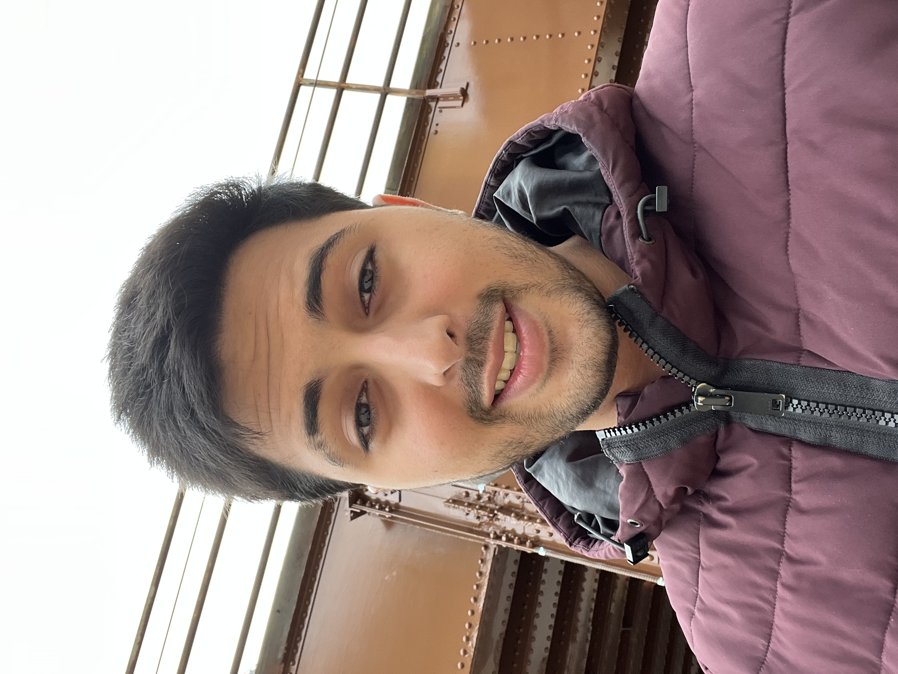

Brenno Cardoso
Senior Computer Science Undergraduate at Northwestern University
My interests stem from data science, back-end software engineering and game design and development. I have particular interest in analyzing how we can apply gamefied softwares to simplify and support us in everyday tasks. For instance, how can we apply gamification to support children with disabilities to have a more fair learning experience.
My other academic interests include Chemistry and Marketing. When I first arrived at Northwestern, I was a Chemistry major, particularly interested in Organic Chemistry. However, I ended up chaning my mind and switched to Computer Science during my Sophomore Year due to it having more alignment with my professional interests. As for Marketing, I have taken some classes of the Integrated Marketing Communications Program, with emphasis on marketing data analysis.
I currently work at BriteCo as their Tech Marketing Specialist. I work closely with both department to find technical solutions to best serve our current consumers as well as attract new ones. Those practices include CRM automations, SEO boosting, marketing data analysis and both back-end and front-end software development.
In terms of my personal life, I am a Brazilian scholarship student at Northwestern. I currently live in Evanston, IL. My hobbies include games, sports, dancing and music. As a football fan, I am a addicted supporter of São Paulo, Borussia Dortmund and of the Seleção Brasileira.
- 
- brennocardoso2023@u.northwestern.edu
 github.com/jammalz
github.com/jammalz
Contact